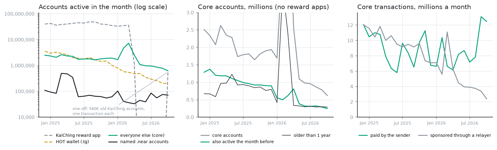
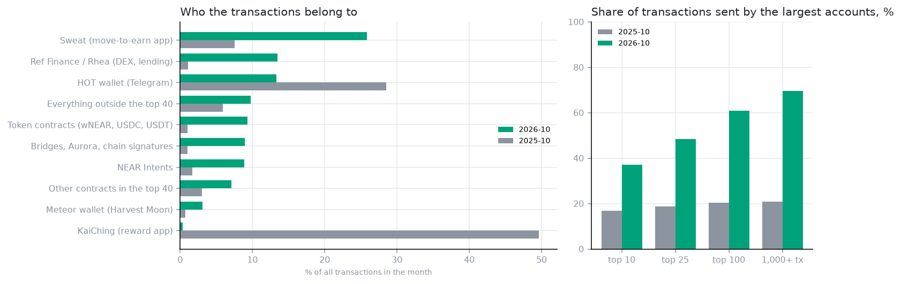

NEAR Real Usage
Daily data 2020-07-21 → 2026-11-11 (2305 days); account census through
2026-11-11. Rebuilt daily by python -m thesis build.
The argument: THESIS.md (its numbers are a snapshot as of 2026-11-11; the daily figures on this page move on).
Code and data: github.com/ivegor/near-real-usage.
Every active account, counted (full chain, not a sample)
In 2026-10, 1.38M accounts acted on NEAR against 43.64M in 2025-10 (-97%). 560K of them are old accounts of the reward app KaiChing that sent one transaction each in a single sweep; the app itself had 40.39M accounts a year earlier and stopped in spring 2026. Without KaiChing: 3.25M to 819K (-75%). Outside the reward apps, core accounts went 1.81M to 621K (-66%; -57% on three-month means) and those also active the month before 925K to 249K (-73%). Core transactions paid by the sender grew +28% (+35% on three-month means) while those sponsored through relayers fell -75%. Transactions per core account rose from 10.7 to 23.9 a month, but with last year's mix of account types it would be 11.7: low-activity accounts left, the rest did not get busier. Named .near accounts: +13% (+2% on three-month means).

Method: sql/account_age.sql on the NEAR BigQuery public dataset (all transactions, 482.64 GB scanned, result in data/bq/account_age.csv). The actor of a relayed transaction is the user, not the relayer. Core = accounts outside the kaiching, .tg and .sweat namespaces. The scan ends on 2026-11-11, so the last month shown is 2026-10. In February and March 2026 millions of existing implicit accounts sent one transaction each; those two months are off the scale in the middle panel.
Query / code: sql/account_age.sql
Who sends the transactions
In 2026-10, 30 accounts sent half of NEAR's 22.6M transactions and the top 10 sent 37% (17% in 2025-10). Reward and wallet apps (Sweat, HOT, Meteor, KaiChing) are 43% of transactions, down from 86%; Sweat alone is 26%. Trading, Intents, token transfers and bridges are 41% (was 5%); transactions on the Ref/Rhea exchange changed +96%. intents.near received 2.01M transactions (2.32M a year earlier), 97% of them signed by two accounts.

Method: sql/top_accounts.sql on the NEAR BigQuery public dataset (13.53 GB), result in data/bq/top_accounts_result.csv. A direct transaction is assigned to the contract it calls, a relayed one to its relayer; contracts and relayers are grouped into apps by the table in thesis/clients.py. Intents users sign off-chain, so its on-chain signers are relayers, not users.
Query / code: sql/top_accounts.sql
What the daily aggregates show, and why they mislead
Over the last 90 days the proxy active - new averaged 60,746/day (+37% vs a year earlier), new accounts 10,946/day (-96%). By medians it changed +11%. This proxy is wrong about the direction: counted directly on the full chain, core accounts active two months running changed -73% over the same year (see the first chart). The aggregator's "active accounts" are transaction signers, so users acting through relayers are missing, and its "new accounts" include accounts created in bulk by a handful of creator accounts.

Method: returning_accounts = active_accounts - new_accounts (NearBlocks daily charts), 30-day rolling mean. This is a lower bound: new accounts that did not transact on their first day are subtracted anyway. New accounts exceeded active accounts (returning clipped to 0) on 0 of the last 90 days, 7 of the 90 days a year earlier and 234 days in all history (mostly mid-2022, shown as a gap).
Query / code: thesis/sources.py
Usage vs price
Price changed +39% year-on-year (90-day averages) while daily transactions changed -84% and active accounts -75%.

Method: Same 90-day window compared with the window 365 days earlier.
Query / code: thesis/sources.py
Transactions per active account
Each active account sent 11.2 transactions a day on average in the last 90 days (-30% YoY). This aggregate moved with the reward apps: relayers that signed millions of transactions for other accounts count as single active accounts here, and most of them are gone.

Method: txns / active_accounts (NearBlocks), 30-day rolling mean. NearBlocks' active accounts are transaction signers; users acting through relayers are not counted, so this is not transactions per user (see the first chart).
Query / code: thesis/sources.py
Fees per active account
An active account paid $0.066 a day in fees over the last 90 days (+120% YoY in USD, +43% in NEAR terms, +53% by USD medians); total fees were $4,122/day (-52% YoY).

Method: txn_fee_usd / active_accounts (NearBlocks), 30-day rolling mean; NEAR terms = the same divided by the daily price. The denominator counts transaction signers only, so read the level with care; total fees do not depend on it.
Query / code: thesis/sources.py
NEAR Intents volume
In 2026-10 Intents volume averaged $128.6M a day against $55.6M in the same month a year earlier (+131%); the last 90 days averaged $134.9M a day, +84% on the 90 days before and +223% on the same 90 days a year earlier.

Method: DefiLlama dexs/near-intents totalDataChart, 7-day rolling mean. The 90-day year-on-year figure shrinks every day as its base moves through the ramp-up of autumn 2025; the calendar-month comparison does not.
Query / code: thesis/sources.py
Does usage lead price?
Weekly-change correlation with price, lags outside the noise band (6 of 85 tested; about 4 expected by chance): active - new (proxy): nothing outside the noise band; active accounts: -5 wk r=+0.12, +0 wk r=+0.14; intents volume: nothing outside the noise band; fees (in NEAR): nothing outside the noise band; transactions: -8 wk r=+0.14, +2 wk r=-0.13, +4 wk r=+0.11, +6 wk r=-0.15. Fees are tested in NEAR: in USD they correlate with price in the same week (r=0.38) only because USD fees are NEAR fees multiplied by the price.

Method: corr(Δlog metric_t, Δlog price_{t+k}), k in weeks, positive k = metric moves first (green bars); dotted lines = ±2/√n noise band.
Query / code: thesis/metrics.py
Sources
Raw API responses are committed in data/raw/; every number on this page is in docs/summary.json.